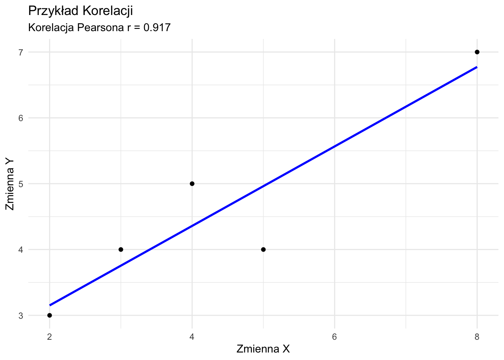
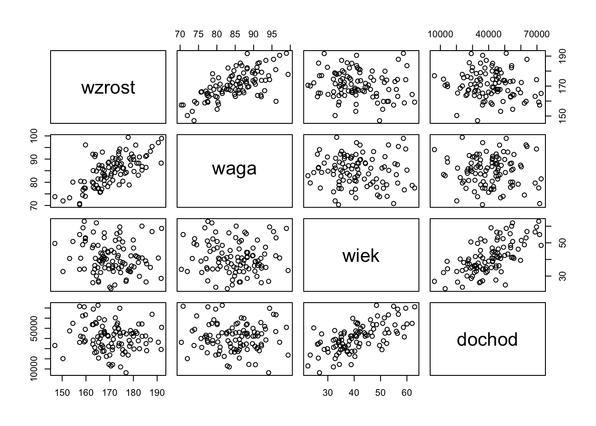
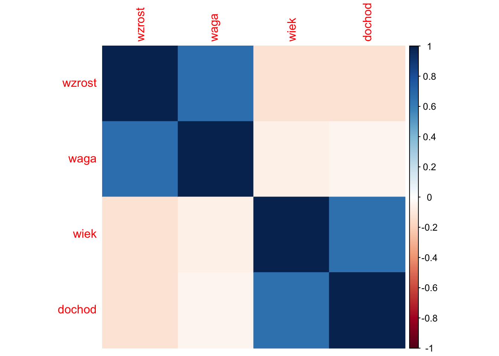
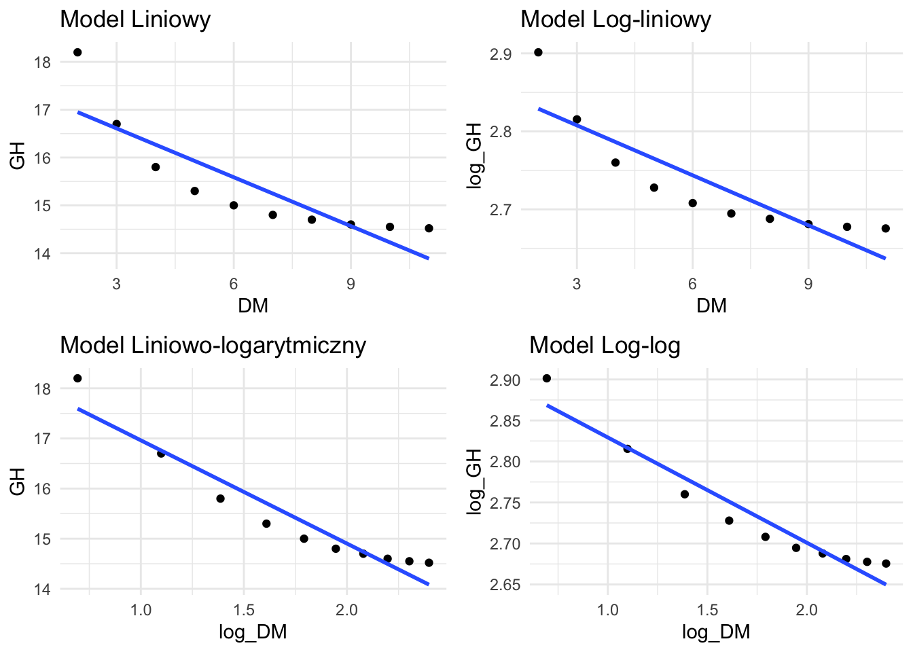

x <- c(1, 2, 3, 4, 5)
y <- c(2, 4, 5, 4, 5)
cov(x, y)[1] 1.5Statystyki dwuwymiarowe opisują związek między dwiema zmiennymi. Omówimy kilka miar, zaczynając od kowariancji i przechodząc do bardziej zaawansowanych miar korelacji.
Kowariancja mierzy, jak dwie zmienne zmieniają się razem.
Wzór: \(cov(X,Y) = \frac{\sum_{i=1}^n (x_i - \bar{x})(y_i - \bar{y})}{n - 1}\)
Przykład Ręcznego Obliczenia:
Obliczmy kowariancję dla dwóch zmiennych:
| Krok | Opis | Obliczenie |
|---|---|---|
| 1 | Oblicz średnie | \(\bar{x} = 3, \bar{y} = 4\) |
| 2 | Oblicz \((x_i - \bar{x})(y_i - \bar{y})\) dla każdej pary | \((-2)(-2) = 4\) |
| \((-1)(0) = 0\) | ||
| \((0)(1) = 0\) | ||
| \((1)(0) = 0\) | ||
| \((2)(1) = 2\) | ||
| 3 | Zsumuj wyniki | \(4 + 0 + 0 + 0 + 2 = 6\) |
| 4 | Podziel przez (n-1) | \(6 / 4 = 1,5\) |
Obliczenie w R:
x <- c(1, 2, 3, 4, 5)
y <- c(2, 4, 5, 4, 5)
cov(x, y)[1] 1.5Interpretacja: - Dodatnia kowariancja (1,5) wskazuje, że x i y mają tendencję do wzrostu razem.
Zalety:
Wady:
Korelacja Pearsona mierzy siłę i kierunek liniowego związku między dwiema zmiennymi ciągłymi.
Wzór: \(r = \frac{cov(X,Y)}{s_X s_Y} = \frac{\sum (x_i - \bar{x})(y_i - \bar{y})}{\sqrt{\sum (x_i - \bar{x})^2 \sum (y_i - \bar{y})^2}}\)
Przykład Ręcznego Obliczenia:
Używając tych samych danych co wyżej:
| Krok | Opis | Obliczenie |
|---|---|---|
| 1 | Oblicz kowariancję | (Z poprzedniego obliczenia) 1,5 |
| 2 | Oblicz odchylenia standardowe | \(s_X = \sqrt{\frac{10}{4}} = 1,58, s_Y = \sqrt{\frac{6}{4}} = 1,22\) |
| 3 | Podziel kowariancję przez iloczyn odchyleń standardowych | \(1,5 / (1,58 * 1,22) = 0,7746\) |
Obliczenie w R:
cor(x, y, method = "pearson")[1] 0.7745967Interpretacja: - Współczynnik korelacji 0,7746 wskazuje na silny dodatni związek liniowy między x i y.
Zalety:
Wady:
Korelacja Spearmana mierzy siłę i kierunek monotonicznego związku między dwiema zmiennymi, które mogą być ciągłe lub porządkowe.
Wzór: \(r_s = 1 - \frac{6 \sum d_i^2}{n(n^2 - 1)}\), gdzie \(d_i\) to różnica między rangami.
Przykład Ręcznego Obliczenia:
Użyjmy nieco innych danych:
| Krok | Opis | Obliczenie |
|---|---|---|
| 1 | Przypisz rangi obu zmiennym | x_ranga: 1, 2, 3, 4, 5 |
| y_ranga: 1, 3, 2, 5, 4 | ||
| 2 | Oblicz różnice w rangach (d) | 0, -1, 1, -1, 1 |
| 3 | Podnieś różnice do kwadratu | 0, 1, 1, 1, 1 |
| 4 | Zsumuj kwadraty różnic | \(\sum d_i^2 = 4\) |
| 5 | Zastosuj wzór | \(r_s = 1 - \frac{6(4)}{5(5^2 - 1)} = 0,8\) |
Obliczenie w R:
x <- c(1, 2, 3, 4, 5)
y <- c(1, 3, 2, 5, 4)
cor(x, y, method = "spearman")[1] 0.8Interpretacja: - Korelacja Spearmana 0,8 wskazuje na silny dodatni związek monotoniczny między x i y.
Zalety:
Wady:
Tabela krzyżowa (tabela kontyngencji) pokazuje związek między dwiema zmiennymi kategorycznymi.
Przykład:
Stwórzmy tabelę krzyżową dla dwóch zmiennych: - Poziom wykształcenia: Średnie, Wyższe, Podyplomowe - Status zatrudnienia: Zatrudniony, Bezrobotny
wyksztalcenie <- factor(c("Średnie", "Wyższe", "Podyplomowe", "Średnie", "Wyższe", "Podyplomowe", "Średnie", "Wyższe", "Podyplomowe"))
zatrudnienie <- factor(c("Zatrudniony", "Zatrudniony", "Zatrudniony", "Bezrobotny", "Zatrudniony", "Zatrudniony", "Bezrobotny", "Bezrobotny", "Zatrudniony"))
table(wyksztalcenie, zatrudnienie) zatrudnienie
wyksztalcenie Bezrobotny Zatrudniony
Podyplomowe 0 3
Średnie 2 1
Wyższe 1 2Interpretacja:
Zalety:
Wady:
Przy wyborze statystyki dwuwymiarowej należy wziąć pod uwagę:
Typ danych:
Typ związku:
Obecność wartości odstających:
Rozkład:
Wielkość próby:
Pamiętaj, że często wartościowe jest użycie wielu miar i wizualizacji (takich jak wykresy rozrzutu), aby uzyskać kompleksowe zrozumienie związku między zmiennymi.
Statystyki wielowymiarowe obejmują analizę związków między trzema lub więcej zmiennymi jednocześnie. Ta sekcja wprowadzi niektóre podstawowe koncepcje i techniki analizy wielowymiarowej, koncentrując się na metodach opartych na korelacji.
Macierz korelacji to tabela pokazująca korelacje parami dla kilku zmiennych. Jest to podstawowe narzędzie w analizie wielowymiarowej.
Przykład: Stwórzmy macierz korelacji dla czterech zmiennych: wzrost, waga, wiek i dochód.
set.seed(123) # Dla powtarzalności
wzrost <- rnorm(100, 170, 10)
waga <- wzrost * 0.5 + rnorm(100, 0, 5)
wiek <- rnorm(100, 40, 10)
dochod <- wiek * 1000 + rnorm(100, 0, 10000)
dane <- data.frame(wzrost, waga, wiek, dochod)
macierz_kor <- cor(dane)
print(macierz_kor) wzrost waga wiek dochod
wzrost 1.0000000 0.66712996 -0.12917601 -0.12246786
waga 0.6671300 1.00000000 -0.06814187 -0.04579492
wiek -0.1291760 -0.06814187 1.00000000 0.65654902
dochod -0.1224679 -0.04579492 0.65654902 1.00000000Interpretacja: - Każda komórka pokazuje korelację między dwiema zmiennymi. - Przekątna zawsze wynosi 1 (korelacja zmiennej z samą sobą). - Szukaj silnych korelacji (bliskich 1 lub -1), aby zidentyfikować potencjalne związki.
Macierz wykresów rozrzutu pokazuje parami związki między wieloma zmiennymi.
pairs(dane)
Interpretacja:
Wykres korelacji zapewnia wizualną reprezentację macierzy korelacji.
library(corrplot)corrplot 0.94 loadedcorrplot(macierz_kor, method = "color")
Interpretacja:
Korelacja cząstkowa mierzy związek między dwiema zmiennymi przy kontrolowaniu jednej lub więcej innych zmiennych.
Przykład: Obliczmy korelację cząstkową między wzrostem a wagą, kontrolując wiek.
library(ppcor)Loading required package: MASSpcor.test(dane$wzrost, dane$waga, dane$wiek) estimate p.value statistic n gp Method
1 0.6654367 5.758157e-14 8.779896 100 1 pearsonInterpretacja:
Korelacja wielokrotna mierzy siłę związku między zmienną zależną a wieloma zmiennymi niezależnymi.
Przykład: Przewidźmy wagę na podstawie wzrostu i wieku.
model <- lm(waga ~ wzrost + wiek, data = dane)
R <- sqrt(summary(model)$r.squared)
print(paste("Współczynnik korelacji wielokrotnej:", R))[1] "Współczynnik korelacji wielokrotnej: 0.667377840470434"Interpretacja:
Analiza czynnikowa to technika używana do zredukowania wielu zmiennych do mniejszej liczby czynników leżących u podstaw.
Przykład: Wykonajmy prostą analizę czynnikową na naszym zbiorze danych.
library(psych)
wynik_fa <- fa(dane, nfactors = 2, rotate = "varimax")
print(wynik_fa$loadings, cutoff = 0.3)
Loadings:
MR2 MR1
wzrost 0.798
waga 0.836
wiek 0.729
dochod 0.895
MR2 MR1
SS loadings 1.344 1.341
Proportion Var 0.336 0.335
Cumulative Var 0.336 0.671Interpretacja:
Wielkość próby: Techniki wielowymiarowe często wymagają większych prób dla stabilnych wyników.
Współliniowość: Wysokie korelacje między zmiennymi niezależnymi mogą powodować problemy w niektórych analizach.
Wartości odstające: Wielowymiarowe wartości odstające mogą mieć silny wpływ na wyniki.
Założenia: Wiele technik zakłada wielowymiarową normalność i liniowe związki.
Złożoność interpretacji: Wraz ze wzrostem liczby zmiennych interpretacja może stać się bardziej wyzwająca.
To wprowadzenie do statystyki wielowymiarowej opiera się na koncepcji korelacji, aby badać związki między wieloma zmiennymi. Techniki te zapewniają potężne narzędzia do zrozumienia złożonych zbiorów danych, ale wymagają również starannego rozważenia założeń i ograniczeń. W miarę postępu w Twojej podróży statystycznej napotkasz bardziej zaawansowane techniki wielowymiarowe, takie jak MANOVA, analiza dyskryminacyjna i modelowanie równań strukturalnych.
Dane dotyczące wielkości okręgu wyborczego (DM) i indeksu Gallaghera:
| DM (\(X\)) | Gallagher (\(Y\)) |
|---|---|
| 2 | 18,2 |
| 3 | 16,7 |
| 4 | 15,8 |
| 5 | 15,3 |
| 6 | 15,0 |
| 7 | 14,8 |
| 8 | 14,7 |
| 9 | 14,6 |
| 10 | 14,55 |
| 11 | 14,52 |
Obliczanie średnich:
Dla DM (\(X\)): \(\bar{X} = \frac{\sum_{i=1}^n X_i}{n}\)
Szczegółowe obliczenia:
2 + 3 + 4 + 5 + 6 + 7 + 8 + 9 + 10 + 11 = 65
x̄ = 65 ÷ 10 = 6,5Dla indeksu Gallaghera (\(Y\)): \(\bar{Y} = \frac{\sum_{i=1}^n Y_i}{n}\)
Szczegółowe obliczenia:
18,2 + 16,7 + 15,8 + 15,3 + 15,0 + 14,8 + 14,7 + 14,6 + 14,55 + 14,52 = 154,17
ȳ = 154,17 ÷ 10 = 15,417Pełna tabela robocza ze wszystkimi obliczeniami:
| \(i\) | \(X_i\) | \(Y_i\) | \((X_i - \bar{X})\) | \((Y_i - \bar{Y})\) | \((X_i - \bar{X})(Y_i - \bar{Y})\) | \((X_i - \bar{X})^2\) | \((Y_i - \bar{Y})^2\) |
|---|---|---|---|---|---|---|---|
| 1 | 2 | 18,2 | -4,5 | 2,783 | -12,5235 | 20,25 | 7,7451 |
| 2 | 3 | 16,7 | -3,5 | 1,283 | -4,4905 | 12,25 | 1,6461 |
| 3 | 4 | 15,8 | -2,5 | 0,383 | -0,9575 | 6,25 | 0,1467 |
| 4 | 5 | 15,3 | -1,5 | -0,117 | 0,1755 | 2,25 | 0,0137 |
| 5 | 6 | 15,0 | -0,5 | -0,417 | 0,2085 | 0,25 | 0,1739 |
| 6 | 7 | 14,8 | 0,5 | -0,617 | -0,3085 | 0,25 | 0,3807 |
| 7 | 8 | 14,7 | 1,5 | -0,717 | -1,0755 | 2,25 | 0,5141 |
| 8 | 9 | 14,6 | 2,5 | -0,817 | -2,0425 | 6,25 | 0,6675 |
| 9 | 10 | 14,55 | 3,5 | -0,867 | -3,0345 | 12,25 | 0,7517 |
| 10 | 11 | 14,52 | 4,5 | -0,897 | -4,0365 | 20,25 | 0,8047 |
| Suma | 65 | 154,17 | 0 | 0 | -28,085 | 82,5 | 12,8442 |
Obliczanie kowariancji: \(Cov(X,Y) = \frac{\sum_{i=1}^n (X_i - \bar{X})(Y_i - \bar{Y})}{n-1}\)
Cov(X,Y) = -28,085 ÷ 9 = -3,120556Dla DM (\(X\)): \(\sigma_X = \sqrt{\frac{\sum_{i=1}^n (X_i - \bar{X})^2}{n-1}}\)
σx = √(82,5 ÷ 9)
= √9,1667
= 3,026582Dla Gallaghera (\(Y\)): \(\sigma_Y = \sqrt{\frac{\sum_{i=1}^n (Y_i - \bar{Y})^2}{n-1}}\)
σy = √(12,8442 ÷ 9)
= √1,4271
= 1,194612\(r = \frac{Cov(X,Y)}{\sigma_X \sigma_Y}\)
r = -3,120556 ÷ (3,026582 × 1,194612)
= -3,120556 ÷ 3,615752
= -0,863044Pełna tabela rangowa ze wszystkimi obliczeniami:
| \(i\) | \(X_i\) | \(Y_i\) | Ranga \(X_i\) | Ranga \(Y_i\) | \(d_i\) | \(d_i^2\) |
|---|---|---|---|---|---|---|
| 1 | 2 | 18,2 | 1 | 10 | -9 | 81 |
| 2 | 3 | 16,7 | 2 | 9 | -7 | 49 |
| 3 | 4 | 15,8 | 3 | 8 | -5 | 25 |
| 4 | 5 | 15,3 | 4 | 7 | -3 | 9 |
| 5 | 6 | 15,0 | 5 | 6 | -1 | 1 |
| 6 | 7 | 14,8 | 6 | 5 | 1 | 1 |
| 7 | 8 | 14,7 | 7 | 4 | 3 | 9 |
| 8 | 9 | 14,6 | 8 | 3 | 5 | 25 |
| 9 | 10 | 14,55 | 9 | 2 | 7 | 49 |
| 10 | 11 | 14,52 | 10 | 1 | 9 | 81 |
| Suma | 330 |
Obliczanie korelacji Spearmana: \(r_s = 1 - \frac{6\sum d_i^2}{n(n^2-1)}\)
rs = 1 - (6 × 330) ÷ (10(100 - 1))
= 1 - 1980 ÷ 990
= 1 - 2
= -1# Tworzenie wektorów
DM <- c(2, 3, 4, 5, 6, 7, 8, 9, 10, 11)
GH <- c(18.2, 16.7, 15.8, 15.3, 15.0, 14.8, 14.7, 14.6, 14.55, 14.52)
# Obliczanie kowariancji
cov(DM, GH)[1] -3.120556# Obliczanie korelacji
cor(DM, GH, method = "pearson")[1] -0.8627742cor(DM, GH, method = "spearman")[1] -1library(ggplot2)
Attaching package: 'ggplot2'The following objects are masked from 'package:psych':
%+%, alpha# Tworzenie ramki danych
data <- data.frame(DM = DM, GH = GH)
# Tworzenie wykresu rozrzutu
ggplot(data, aes(x = DM, y = GH)) +
geom_point(size = 3, color = "blue") +
geom_smooth(method = "lm", se = FALSE, color = "red") +
labs(
title = "Wielkość Okręgu vs Indeks Gallaghera",
x = "Wielkość Okręgu (DM)",
y = "Indeks Gallaghera (GH)"
) +
theme_minimal()`geom_smooth()` using formula = 'y ~ x'
Korzystając z wcześniej obliczonych wartości: - \(\sum(X_i - \bar{X})(Y_i - \bar{Y}) = -28,085\) - \(\sum(X_i - \bar{X})^2 = 82,5\) - \(\bar{X} = 6,5\) - \(\bar{Y} = 15,417\)
Obliczanie nachylenia (\(\beta_1\)): \(\beta_1 = \frac{\sum(X_i - \bar{X})(Y_i - \bar{Y})}{\sum(X_i - \bar{X})^2}\)
β₁ = -28,085 ÷ 82,5 = -0,3404Obliczanie wyrazu wolnego (\(\beta_0\)): \(\beta_0 = \bar{Y} - \beta_1\bar{X}\)
β₀ = 15,417 - (-0,3404 × 6,5)
= 15,417 + 2,2126
= 17,6296Zatem równanie regresji OLS ma postać: \(\hat{Y} = 17,6296 - 0,3404X\)
Pełna tabela ze wszystkimi obliczeniami:
| \(i\) | \(X_i\) | \(Y_i\) | \(\hat{Y}_i\) | \(e_i = Y_i - \hat{Y}_i\) | \(e_i^2\) | \((Y_i - \bar{Y})^2\) | \((\hat{Y}_i - \bar{Y})^2\) |
|---|---|---|---|---|---|---|---|
| 1 | 2 | 18,2 | 16,9488 | 1,2512 | 1,5655 | 7,7451 | 2,3404 |
| 2 | 3 | 16,7 | 16,6084 | 0,0916 | 0,0084 | 1,6461 | 1,4241 |
| 3 | 4 | 15,8 | 16,2680 | -0,4680 | 0,2190 | 0,1467 | 0,7225 |
| 4 | 5 | 15,3 | 15,9276 | -0,6276 | 0,3939 | 0,0137 | 0,2601 |
| 5 | 6 | 15,0 | 15,5872 | -0,5872 | 0,3448 | 0,1739 | 0,0289 |
| 6 | 7 | 14,8 | 15,2468 | -0,4468 | 0,1996 | 0,3807 | 0,0290 |
| 7 | 8 | 14,7 | 14,9064 | -0,2064 | 0,0426 | 0,5141 | 0,2610 |
| 8 | 9 | 14,6 | 14,5660 | 0,0340 | 0,0012 | 0,6675 | 0,7241 |
| 9 | 10 | 14,55 | 14,2256 | 0,3244 | 0,1052 | 0,7517 | 1,4184 |
| 10 | 11 | 14,52 | 13,8852 | 0,6348 | 0,4030 | 0,8047 | 2,3439 |
| Suma | 65 | 154,17 | 154,17 | 0 | 3,2832 | 12,8442 | 9,5524 |
Obliczenia dla wartości dopasowanych:
Dla X = 2:
Ŷ = 17,6296 + (-0,3404 × 2) = 16,9488
Dla X = 3:
Ŷ = 17,6296 + (-0,3404 × 3) = 16,6084
[... kontynuacja dla wszystkich wartości]Suma kwadratów reszt (SSE): \(SSE = \sum e_i^2\)
SSE = 3,2832Całkowita suma kwadratów (SST): \(SST = \sum(Y_i - \bar{Y})^2\)
SST = 12,8442Suma kwadratów regresji (SSR): \(SSR = \sum(\hat{Y}_i - \bar{Y})^2\)
SSR = 9,5524Weryfikacja dekompozycji: \(SST = SSR + SSE\)
12,8442 = 9,5524 + 3,2832 (w granicach błędu zaokrąglenia)Obliczanie współczynnika determinacji R-kwadrat: \(R^2 = \frac{SSR}{SST} = 1 - \frac{SSE}{SST}\)
R² = 9,5524 ÷ 12,8442
= 0,7438# Dopasowanie modelu liniowego
model <- lm(GH ~ DM, data = data)
# Podsumowanie statystyk
summary(model)
Call:
lm(formula = GH ~ DM, data = data)
Residuals:
Min 1Q Median 3Q Max
-0.62764 -0.46274 -0.08615 0.26624 1.25109
Coefficients:
Estimate Std. Error t value Pr(>|t|)
(Intercept) 17.62976 0.50121 35.174 4.67e-10 ***
DM -0.34042 0.07053 -4.827 0.00131 **
---
Signif. codes: 0 '***' 0.001 '**' 0.01 '*' 0.05 '.' 0.1 ' ' 1
Residual standard error: 0.6406 on 8 degrees of freedom
Multiple R-squared: 0.7444, Adjusted R-squared: 0.7124
F-statistic: 23.3 on 1 and 8 DF, p-value: 0.00131# Ręczne obliczenie R-kwadrat
SST <- sum((GH - mean(GH))^2)
SSE <- sum(residuals(model)^2)
SSR <- SST - SSE
R2_manual <- SSR/SST
R2_manual[1] 0.7443793# Tworzenie wykresów reszt
par(mfrow = c(2, 2))
plot(model)
# Tworzenie wykresu wartości przewidywanych vs rzeczywistych
ggplot(data.frame(
Rzeczywiste = GH,
Przewidywane = fitted(model)
), aes(x = Przewidywane, y = Rzeczywiste)) +
geom_point(color = "blue", size = 3) +
geom_abline(intercept = 0, slope = 1, linetype = "dashed", color = "red") +
labs(
title = "Wartości Przewidywane vs Rzeczywiste",
x = "Przewidywany Indeks Gallaghera",
y = "Rzeczywisty Indeks Gallaghera"
) +
theme_minimal()
Najpierw obliczamy logarytmy naturalne zmiennych:
| \(i\) | \(X_i\) | \(Y_i\) | \(\ln(X_i)\) | \(\ln(Y_i)\) |
|---|---|---|---|---|
| 1 | 2 | 18,2 | 0,6931 | 2,9014 |
| 2 | 3 | 16,7 | 1,0986 | 2,8154 |
| 3 | 4 | 15,8 | 1,3863 | 2,7600 |
| 4 | 5 | 15,3 | 1,6094 | 2,7278 |
| 5 | 6 | 15,0 | 1,7918 | 2,7081 |
| 6 | 7 | 14,8 | 1,9459 | 2,6946 |
| 7 | 8 | 14,7 | 2,0794 | 2,6878 |
| 8 | 9 | 14,6 | 2,1972 | 2,6810 |
| 9 | 10 | 14,55 | 2,3026 | 2,6777 |
| 10 | 11 | 14,52 | 2,3979 | 2,6757 |
Szacujemy trzy alternatywne specyfikacje:
# Tworzenie zmiennych transformowanych
data$log_DM <- log(data$DM)
data$log_GH <- log(data$GH)
# Dopasowanie modeli
model_linear <- lm(GH ~ DM, data = data)
model_loglinear <- lm(log_GH ~ DM, data = data)
model_linearlog <- lm(GH ~ log_DM, data = data)
model_loglog <- lm(log_GH ~ log_DM, data = data)
# Porównanie wartości R-kwadrat
models_comparison <- data.frame(
Model = c("Liniowy", "Log-liniowy", "Liniowo-logarytmiczny", "Log-log"),
R_kwadrat = c(
summary(model_linear)$r.squared,
summary(model_loglinear)$r.squared,
summary(model_linearlog)$r.squared,
summary(model_loglog)$r.squared
)
)
# Wyświetlenie porównania
models_comparison Model R_kwadrat
1 Liniowy 0.7443793
2 Log-liniowy 0.7670346
3 Liniowo-logarytmiczny 0.9141560
4 Log-log 0.9288088# Tworzenie wykresów dla każdego modelu
p1 <- ggplot(data, aes(x = DM, y = GH)) +
geom_point() +
geom_smooth(method = "lm", se = FALSE) +
labs(title = "Model Liniowy") +
theme_minimal()
p2 <- ggplot(data, aes(x = DM, y = log_GH)) +
geom_point() +
geom_smooth(method = "lm", se = FALSE) +
labs(title = "Model Log-liniowy") +
theme_minimal()
p3 <- ggplot(data, aes(x = log_DM, y = GH)) +
geom_point() +
geom_smooth(method = "lm", se = FALSE) +
labs(title = "Model Liniowo-logarytmiczny") +
theme_minimal()
p4 <- ggplot(data, aes(x = log_DM, y = log_GH)) +
geom_point() +
geom_smooth(method = "lm", se = FALSE) +
labs(title = "Model Log-log") +
theme_minimal()
# Układanie wykresów w siatkę
library(gridExtra)
grid.arrange(p1, p2, p3, p4, ncol = 2)`geom_smooth()` using formula = 'y ~ x'
`geom_smooth()` using formula = 'y ~ x'
`geom_smooth()` using formula = 'y ~ x'
`geom_smooth()` using formula = 'y ~ x'
Na podstawie wartości R-kwadrat, analiza reszt dla najlepiej dopasowanego modelu:
# Wykresy reszt dla najlepszego modelu
par(mfrow = c(2, 2))
plot(model_linearlog)
Współczynniki modelu liniowo-logarytmicznego:
summary(model_linearlog)
Call:
lm(formula = GH ~ log_DM, data = data)
Residuals:
Min 1Q Median 3Q Max
-0.40702 -0.30207 -0.04907 0.22905 0.60549
Coefficients:
Estimate Std. Error t value Pr(>|t|)
(Intercept) 19.0223 0.4079 46.64 4.94e-11 ***
log_DM -2.0599 0.2232 -9.23 1.54e-05 ***
---
Signif. codes: 0 '***' 0.001 '**' 0.01 '*' 0.05 '.' 0.1 ' ' 1
Residual standard error: 0.3712 on 8 degrees of freedom
Multiple R-squared: 0.9142, Adjusted R-squared: 0.9034
F-statistic: 85.19 on 1 and 8 DF, p-value: 1.539e-05Interpretacja: - \(\beta_0\) reprezentuje oczekiwany Indeks Gallaghera, gdy ln(DM) = 0 (czyli gdy DM = 1) - \(\beta_1\) reprezentuje zmianę Indeksu Gallaghera związaną z jednostkowym wzrostem ln(DM)
# Tworzenie wykresu predykcji dla najlepszego modelu
ggplot(data, aes(x = log_DM, y = GH)) +
geom_point(color = "blue", size = 3) +
geom_smooth(method = "lm", se = TRUE, color = "red") +
labs(
title = "Model Liniowo-logarytmiczny: Indeks Gallaghera vs ln(Wielkość Okręgu)",
x = "ln(Wielkość Okręgu)",
y = "Indeks Gallaghera"
) +
theme_minimal()`geom_smooth()` using formula = 'y ~ x'
Dla modelu log-log współczynniki bezpośrednio reprezentują elastyczności. Obliczenie średniej elastyczności dla modelu liniowo-logarytmicznego:
# Obliczenie elastyczności przy wartościach średnich
mean_DM <- mean(data$DM)
mean_GH <- mean(data$GH)
beta1 <- coef(model_linearlog)[2]
elastycznosc <- beta1 * (1/mean_GH)
elastycznosc log_DM
-0.1336136 Wartość ta reprezentuje procentową zmianę Indeksu Gallaghera przy jednoprocentowej zmianie Wielkości Okręgu.